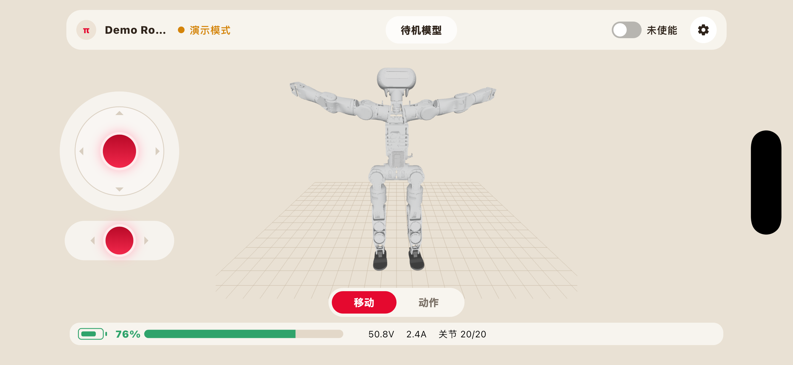
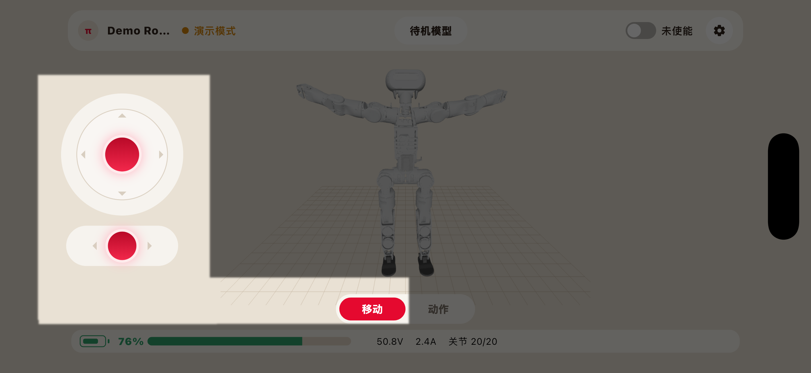
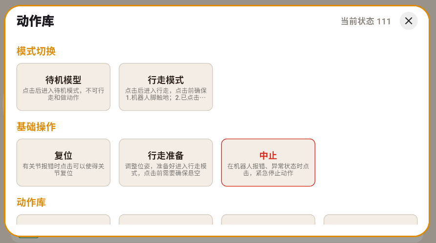

8.6. 动作交互

动作交互功能用于通过软件界面控制机器人执行指定动作。用户点击相应的动作按钮后，软件将向机器人发送动作指令，机器人根据当前状态执行对于动作。
软件提供以下两种动作交互方式：
移动面板
动作库
使用动作交互功能前，请确保机器人已经正常启动并成功连接软件、上使能、当前状态允许执行动作，同时确认机器人周围环境符合安全要求。
有关安全距离、操作限制及异常处理方式，请参考动作交互注意事项。
备注
机器人上使能时需要选择姿态，请务必与当前机器人实际姿态保持一致。
8.6.1. 移动面板控制

用户可通过3D模型界面左侧的两个移动面板控制机器人运动。
按钮 |
机器人反应 |
说明 |
|---|---|---|
上 |
前进 |
按住按钮、向上滑动并保持，控制机器人沿当前朝向向前移动 |
下 |
后退 |
按住按钮、向下滑动并保持，控制机器人向后移动 |
左 |
左转 |
按住按钮、向左滑动并保持，控制机器人向左前方转向并前进 |
右 |
右转 |
按住按钮、向右滑动并保持，控制机器人向右前方转向并前进 |
按钮 |
机器人反应 |
说明 |
|---|---|---|
左 |
向左平移 |
按住按钮、向左滑动并保持，控制机器人向左平移 |
右 |
向右平移 |
按住按钮、向右滑动并保持，控制机器人向右平移 |
警告
移动控制会使机器人发生实际位移。 操作期间，操作人员应与机器人保持安全距离，并确保机器人运动路径始终处于可视范围内。
8.6.2. 动作库控制

动作库用于集中展示机器人支持的预设动作。动作库中的动作已经完成动作编排，用户无需单独控制机器人关节，点击相应的动作按钮后，软件会向机器人发送动作执行指令，机器人按照预设的动作顺序、速度和幅度完成整套动作。
点击“动作”进入动作库页面，该页面包含以下三个内容：
模式切换
基础操作
动作库
8.6.2.1. 模式切换
模式切换包括：
待机模式：点击后进入待机模式，该模式下机器人不可行走、不可做动作。
行走模式：点击后进入行走模式，需确保机器人的脚已接触地面，且已经在“基础操作”中点击了“行走准备”。
8.6.2.2. 基础操作
复位：出现关节报错时点击该按钮，可使关节复位。
行走准备：在进入行走模式前点击该按钮，可以调整机器人位姿，使其做好行走准备。点击该按钮时，机器人应该悬空。
中止：在机器人出现报错及异常状态时点击该按钮，能紧急停止机器人动作。
8.6.2.3. 动作库
目前已编排好的动作有：
点头
摇头
左、右挥手
高、低挥手
右手敬礼
右手握手
拥抱
摇头晃脑
鼓掌
害羞
观望
欢呼
危险
使用时，若机器人出现任何非预期运动或其他紧急情况，请立即按急停按钮。 急停后，应先排除危险因素，再按照规定完成急停解除、复位和使能操作。